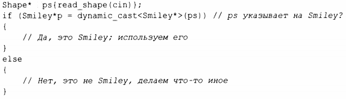
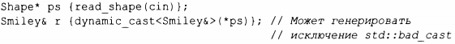

⇐4.5.1 Преимущества иерархий Содержание 4.5.3 Избежание утечки ресурсов⇒
Функция read_shape() возвращает Shape*, так что мы можем рассматривать все фигуры единообразно. Однако что нам делать, если мы захотим использовать функцию-член, имеющуюся только в определенном производном классе, как, например, wink() в классе Srniley? Мы можем запросить, "является ли данная фигура Srniley?", воспользовавшись оператором dynarnic cast:
Если во время выполнения объект, на который указывает аргумент dynarnic _ cast (в данном случае - ps) не имеет ожидаемого типа (в данном случае - Srniley) или типа класса, производного от ожидаемого, то dynarnic_cast возвращает nullptr.
Мы используем приведение dynarnic _ cast к типу указателя, когда аргумент представляет собой корректный указатель. Затем мы проверяем, является ли результат равным nullptr. Эту проверку часто удобно помещать в инициализацию переменной в условии.
Мы можем использовать dynarnic_cast и для приведения к ссылочному типу. Если объект не относится к ожидаемому типу, dynarnic cast в этом случае генерирует исключение bad_cast:
Код будет более чистым, если dynarnic_cast используется с ограничениями. Если мы сможем избежать использования информации о типе, то сможем написать более простой и эффективный код. Но иногда информация о типе теряется и должна быть восстановлена. Обычно это происходит, когда мы передаем объект какой-либо системе, которая принимает интерфейс, определенный базовым классом. Когда эта система позже возвращает объект обратно, нам, возможно, потребуется восстановить его исходный тип. Операции, похожие на dynamic cast, известны как операции "является разновидностью" или "является экземпляром".